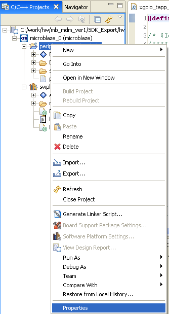
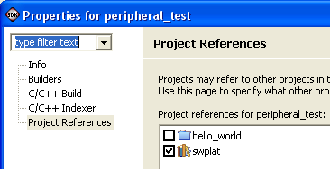

Software Platforms
Software Applications
Project file views
The Referenced C/C++ Projects list on the Projects References page for a given project displays every project in your workspace in the build order you specify. For more information, see Setting build order.
Projects selected in the list are built before the current project according to their dependencies. The least used projects are built first.
To select referenced projects:


Note: Software application
project always referenced the software platform that it is dependent
on. This makes sure that the software application is in sync with the software
platform.
Software Platforms
Software Applications
Project file views

Working with C/C++ project files
Copyright © 1995-2009 Xilinx, Inc. All rights reserved.